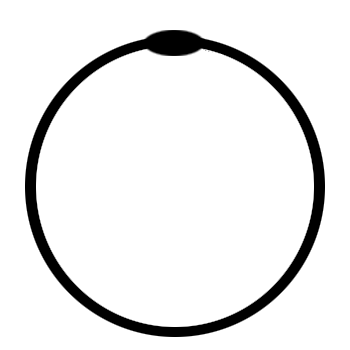

The Assembly is in session, join us now.
We are a nontheist religion, distinguished from traditional belief systems
by our lack of faith in any entity of higher power. Though, that is not to say
that we assume there aren't any. We do not claim to know the
word of god, but we, unlike atheists, are not arrogant enough to suggest
that we know better than the religious, or that their gods are foolish.
We understand that true understanding is unattainable, and so we simply
speculate about the nature of principles beyond our comprehension.
we are asking the questions without answers
To some, this may seem pointless. That is the point we are making.
the only true knowledge after all is in knowing you know nothing